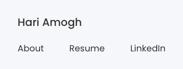

Footer
Footer section is present on the bottom most part of the website. It is present on all the pages of the portfolio. It contains links, contact, copyright information in addition to the main nav bar contents. They assist users to flow through the site without having to scroll up to the nav bar.
Desktop, Tablet view

Mobile view

Best practices & Accessibility
- Mark up the element to enable assistive technologies to identify them.
- Use the semantic footer tag.
- Should be present on all pages of the portfolio.
Code
<footer class="bg-light text-center text-lg-start">
<div class="text-center p-3" style="background-color: #f6f7fb;">
© 2021 Copyright:
<a href="https://hariamogh.com/">Hari Amogh</a>
</div>
</footer>